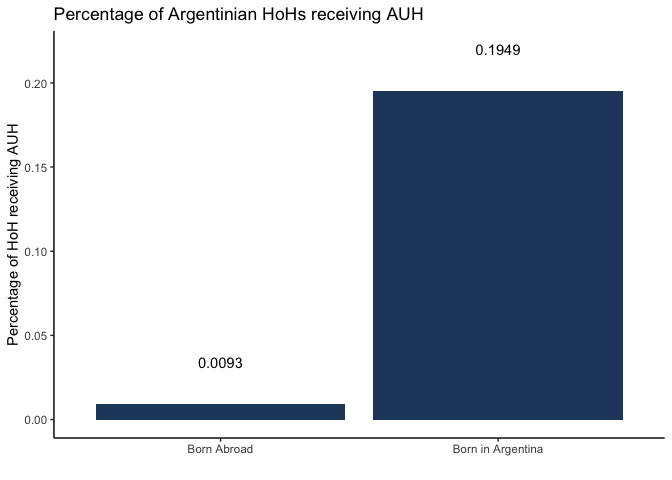
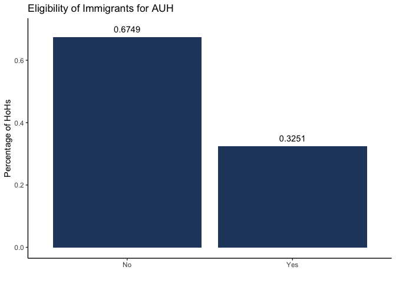
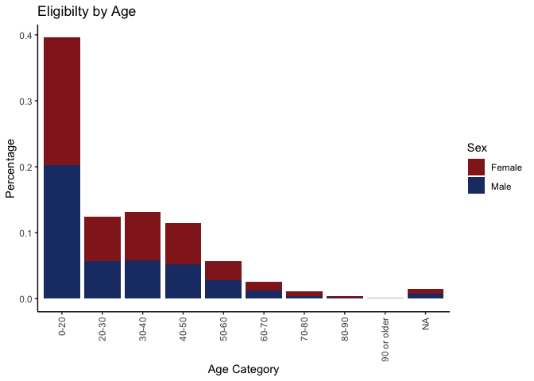
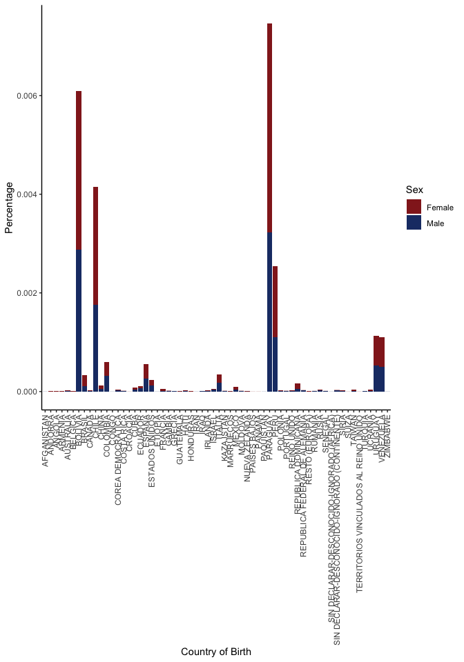
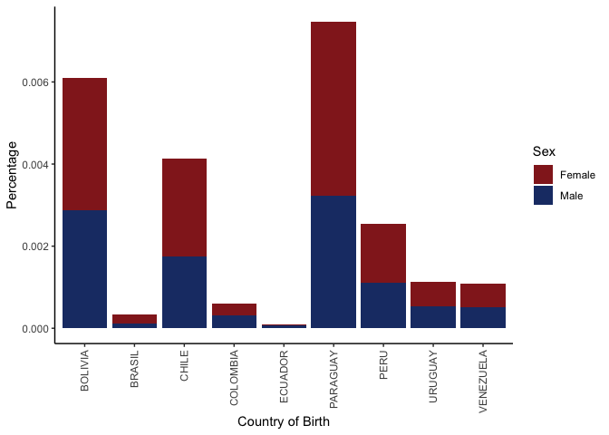
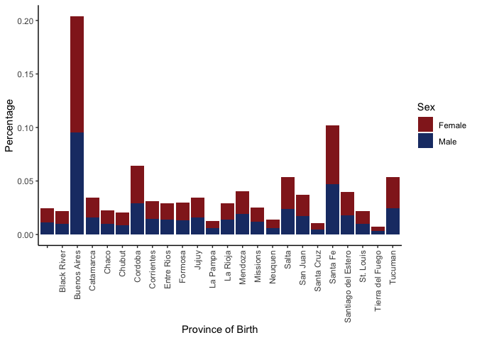
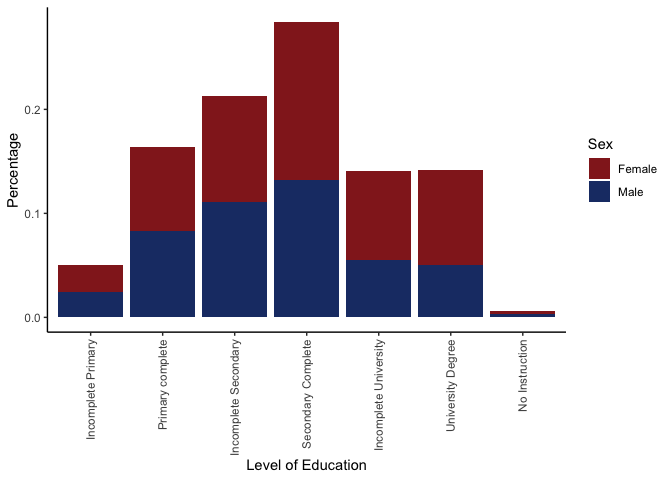

library(tidyverse)
library(ggplot2)
# Set working directory
wd <- rstudioapi::getSourceEditorContext()$path %>%
dirname()
knitr::opts_knit$set(root.dir = wd)
# Load data
load("Data.RData")Eligibility Criteria
Here I am adding columns to the data indicating whether the Households are eligible for AUH Payments. The Criteria are based on:
- Children under 18 living in that Household
- Employment Status
eligible <- Data %>%
group_by(Household) %>%
mutate(Criterium_Child = if_else((any(Age < 18)), "Yes", "No")) %>%
filter(Age >= 18) %>%
mutate(Criterium_Origin = if_else(any(Country_Of_Birth == "Argentina"), "Non-Immigrant", "Immigrant"),
Criterium_Employment = if_else(any(Employment_Position == "Unpaid Family Worker" |
Individual_Income > Min_Wage |
Paid_Vacation == "No" |
Bonus == "No" |
Sick_Days == "No" |
Health_Insurance == "No" |
Pension_Discount == "No"),
"Yes", "No")) %>%
mutate(Criterium_AUH = if_else(any(Criterium_Child == "Yes" & Criterium_Employment == "Yes"), "Yes", "No")) %>%
ungroup()Visualization
First (a):
the percentage of heads of households & their spouses who are immigrants who are eligible for the AUH vs. the percentage of heads of Households & their spouses who are non-immigrants and are eligible for the AUH
Here I group my adjusted data set by Status (= Origin of Birth) and Eligibility, before summarising the percentage of each of the four groups (count of entries n() by total number of entries n_households), filtering for eligible households after that to only plot those. Plotting is just a basic ggplot boxplot with the Percentages as labels (using the plyr::round_any to round the percentages).
eligible %>%
filter(Family_Relationship == "Head of Household") %>%
mutate(n_households = n()) %>%
group_by(Criterium_Origin, Criterium_AUH) %>%
reframe(Percentage = n()/n_households) %>%
distinct() %>%
filter(Criterium_AUH == "Yes") %>%
ggplot(aes(x = as.factor(Criterium_Origin), y = Percentage))+
geom_col(fill="#D38CA6")+
geom_text(aes(label = plyr::round_any(Percentage, 0.0001, round)), nudge_y = 0.025)+
theme_classic()+
xlab("")+
ylab("Percentage of HoH receiving AUH")+
ggtitle("Percentage of Argentinian HoHs receiving AUH")
Second (b):
the percentage of heads of households & their spouses who are immigrants who are eligible for the AUH vs. the percentage of heads of households & their spouses who are immigrants who are NOT eligible for the AUH
eligible %>%
filter(Family_Relationship == "Head of Household") %>%
filter(Criterium_Origin == "Immigrant") %>%
drop_na() %>%
mutate(n_households = n()) %>%
group_by(Criterium_AUH) %>%
summarise(Percentage = n()/n_households) %>%
distinct() %>%
ungroup() %>%
ggplot(aes(x = as.factor(Criterium_AUH), y = Percentage))+
geom_col(fill="#D38CA6")+
geom_text(aes(label = plyr::round_any(Percentage, 0.0001, round)), nudge_y = 0.025)+
theme_classic()+
xlab("")+
ylab("Percentage of HoHs")+
ggtitle("Eligibility of Immigrants for AUH")
And lastly onto (c):
of all those who are eligible, what are the percentages based on age group (create age ranges), country of origin (within South America), province of origin (if born in Argentina), and education level.
Starting with the age, where I cut the age into ranges before calculating the Percentage as usual.
eligible %>%
filter(Criterium_AUH == "Yes") %>%
filter(Family_Relationship %in% c("Head of Household", "Spouse")) %>%
drop_na() %>%
mutate(Age_Range = cut(Age, c(0,20,30,40,50,60,70,80,90,Inf))) %>%
mutate(n_households = n()) %>%
group_by(Age_Range, Sex) %>%
summarise(Percentage = n()/n_households) %>%
distinct() %>%
ungroup() %>%
ggplot(aes(fill = Sex, y=Percentage, x = Age_Range))+
geom_bar(position = "stack", stat = "identity")+
scale_fill_manual(values = c("#932322","#1D3A74"))+
scale_x_discrete(labels = c("(0,20]" = "0-20",
"(20,30]" = "20-30",
"(30,40]" = "30-40",
"(40,50]" = "40-50",
"(50,60]" = "50-60",
"(60,70]" = "60-70",
"(70,80]" = "70-80",
"(80,90]" = "80-90",
"(90,Inf]" = "90 or older",
"NA" = "Not specified"))+
theme_classic()+
theme(axis.text.x = element_text(angle = 90, vjust = 0.5, hjust = 1))+
xlab("Age Category")+
ggtitle("Eligibilty by Age")
Next by country of Birth (if born outside of Argentia):
eligible %>%
filter(Criterium_AUH == "Yes") %>%
mutate(n_households = n()) %>%
filter(Criterium_Origin == "Immigrant") %>%
group_by(Country_Of_Birth, Sex) %>%
summarise(Percentage = n()/n_households) %>%
distinct() %>%
ungroup() %>%
ggplot(aes(fill = Sex, y=Percentage, x =Country_Of_Birth))+
geom_bar(position = "stack", stat = "identity")+
scale_fill_manual(values = c("#932322","#1D3A74"))+
theme_classic()+ # Has to be called BEFORE the theme(axis.text)
theme(axis.text.x = element_text(angle = 90, vjust = 0.5, hjust = 1))+
xlab("Country of Birth")
Just South American Countries
eligible %>%
filter(Criterium_AUH == "Yes") %>%
mutate(n_households = n()) %>%
filter(Country_Of_Birth %in% c("BOLIVIA",
"BRASIL",
"CHILE",
"COLOMBIA",
"ECUADOR",
"PERU",
"PARAGUAY",
"URUGUAY",
"VENEZUELA")) %>%
group_by(Country_Of_Birth, Sex) %>%
summarise(Percentage = n()/n_households) %>%
distinct() %>%
ungroup() %>%
ggplot(aes(fill = Sex, y=Percentage, x =Country_Of_Birth))+
geom_bar(position = "stack", stat = "identity")+
scale_fill_manual(values = c("#932322","#1D3A74"))+
theme_classic()+ # Has to be called BEFORE the theme(axis.text)
theme(axis.text.x = element_text(angle = 90, vjust = 0.5, hjust = 1))+
xlab("Country of Birth")
Province of birth (if born in Argentina)
eligible %>%
filter(Criterium_AUH == "Yes") %>%
mutate(n_households = n()) %>%
filter(Country_Of_Birth == "Argentina") %>%
group_by(Province_of_Birth, Sex) %>%
summarise(Percentage = n()/n_households) %>%
distinct() %>%
ungroup() %>%
ggplot(aes(fill = Sex, y=Percentage, x = Province_of_Birth))+
geom_bar(position = "stack", stat = "identity")+
scale_fill_manual(values = c("#932322","#1D3A74"))+
theme_classic()+
theme(axis.text.x = element_text(angle = 90, vjust = 0.5, hjust = 1))+
xlab("Province of Birth")
And last but not least Education level:
eligible %>%
filter(Criterium_AUH == "Yes") %>%
mutate(n_households = n()) %>%
group_by(Education_Level, Sex) %>%
summarise(Percentage = n()/n_households) %>%
distinct() %>%
ungroup() %>%
ggplot(aes(fill = Sex, y=Percentage, x = Education_Level))+
geom_bar(position = "stack", stat = "identity")+
scale_fill_manual(values = c("#932322","#1D3A74"))+
theme_classic()+
theme(axis.text.x = element_text(angle = 90, vjust = 0.5, hjust = 1))+
xlab("Level of Education")
Archived Old Solution:
Solution to Joschka’s Project by Meri
So right now the data wrangling is still very messy, because I am splitting the Data set into “sub-datasets”. However I was unsure of how to perform the filtering in parallel on the data set (maybe using if / ifelse? I am just guessing here), so I’d love to get some feedback on that!
Data filtering
First I am loading the data and filtering on eligibility based on the employment criteria.
# # Load data from RData file
# load("~/Desktop/R2_DataProjects/R2_Data_Projects_Git/Projects/Joschka8878/Data.RData")
#
# # Filtering for eligibility
# # There is probably a better way to do this (e.g. filtering in one step) but this also works
# eligible <- Data %>%
# group_by(Household) %>%
# filter(any(Age < 18)) # Child under 18
#
# # Unemployed
# eliunemployed <- eligible %>%
# filter(any(Unemployed == 1)) %>%
# ungroup()
#
# # Informal workers
# elidom <- eligible %>%
# filter(any(Employment_Position %in% c("Unpaid Family Worker"))) %>%
# ungroup()
#
# eliinf <- eligible %>%
# filter_at(vars(Paid_Vacation, Bonus, Sick_Days, Health_Insurance, Pension_Discount), any_vars(. =="No"))
#
# # Earning less than minium wage
# elimin <- eligible %>%
# filter(any(Individual_Income < Min_Wage)) %>%
# ungroup()
#
# # Combining all into one dataframe
# eligibleall <- rbind(eliunemployed, elidom, elimin, eliinf) %>%
# distinct()Next I am filtering for Eligible/ Non-Eligible Households and their origin (Argentina or Abroad).
# # Eligible + Born in Argentina
# non_im_eg <- eligibleall %>%
# filter(Family_Relationship %in% c("Head of Household", "Spouse")) %>%
# filter(Country_Of_Birth == "Argentina") %>%
# mutate(Status = "Born in Argentina") %>%
# mutate(Eligible = "Eligible")
#
# # Not Eligible + Born in Argentina
# non_im_non <- Data %>%
# filter(Family_Relationship %in% c("Head of Household", "Spouse")) %>%
# filter(Country_Of_Birth == "Argentina") %>%
# mutate(Status = "Born in Argentina") %>%
# mutate(Eligible = "Not Eligible")
# non_im_non[!(non_im_non$Household %in% non_im_eg$Household),]
#
# # Eligible + Born Abroad
# im_eg <- eligibleall %>%
# filter(Age > 18) %>%
# filter(Family_Relationship == c("Head of Household", "Spouse")) %>%
# filter(Country_Of_Birth != "Argentina") %>%
# mutate(Status = "Born Abroad")%>%
# mutate(Eligible = "Eligible")
#
# # Not Eligible + Born Abroad
# im_non <- Data %>%
# filter(Family_Relationship == c("Head of Household", "Spouse")) %>%
# filter(Country_Of_Birth == "Argentina") %>%
# mutate(Status = "Born Abroad") %>%
# mutate(Eligible = "Not Eligible")
# im_non <- im_non[!(im_non$Household %in% im_eg$Household),]
#
# # Combining all into one dataframe
# data_im <- rbind(non_im_eg, im_eg, non_im_non, im_non)Visualization
First (a):
the percentage of heads of households & their spouses who are immigrants who are eligible for the AUH vs. the percentage of heads of Households & their spouses who are non-immigrants and are eligible for the AUH
Here I group my adjusted data set by Status (= Origin of Birth) and Eligibility, before summarising the percentage of each of the four groups (count of entries n() by total number of entries length(data_im$Household)), filtering for eligible households after that to only plot those. Plotting is just a basic ggplot boxplot with the Percentages as labels (using the plyr::round_any to round the percentages).
# data_im %>%
# group_by(Status, Eligible) %>%
# summarise(Percentage = n()/length(data_im$Household)) %>%
# filter(Eligible == "Eligible") %>%
# ungroup() %>%
# ggplot(aes(x = as.factor(Status), y = Percentage))+
# geom_col(fill="#26466C")+
# geom_text(aes(label = plyr::round_any(Percentage, 0.0001, round)), nudge_y = 0.025)+
# theme_classic()+
# xlab("")+
# ylab("Percentage of HoH receiving AUH")+
# ggtitle("Percentage of Argentinian HoHs receiving AUH")Second (b):
the percentage of heads of households & their spouses who are immigrants who are eligible for the AUH vs. the percentage of heads of households & their spouses who are immigrants who are NOT eligible for the AUH
Basically I tackled this the same way as (a) only creating another dataframe (yikes, I know…) to have the correct length/ number of entries for the Percentage. Probably a better way to do that using only the original dataframe, but I did not have the time to get around to do that (Sorry!).
# data_imonly <- rbind(im_eg, im_non)
#
# data_imonly %>%
# group_by(Eligible) %>%
# summarise(Percentage = n()/length(data_imonly$Household)) %>%
# ungroup() %>%
# ggplot(aes(x = as.factor(Eligible), y = Percentage))+
# geom_col(fill="#26466C")+
# geom_text(aes(label = plyr::round_any(Percentage, 0.0001, round)), nudge_y = 0.025)+
# theme_classic()+
# xlab("")+
# ylab("Percentage of HoHs")+
# ggtitle("Eligibility of Immigrants for AUH")
# And lastly onto (c):
of all those who are eligible, what are the percentages based on age group (create age ranges), country of origin (within South America), province of origin (if born in Argentina), and education level.
Starting with the age, where I cut the age into ranges before calculating the Percentage as usual.
# eligibleall %>%
# mutate(Age_Range = cut(Age, c(0,20,30,40,50,60,70,80,90,Inf))) %>%
# group_by(Age_Range, Sex) %>%
# summarise(Percentage = n()/length(data_im$Household)) %>%
# ungroup() %>%
# ggplot(aes(fill = Sex, y=Percentage, x = Age_Range))+
# geom_bar(position = "stack", stat = "identity")+
# scale_fill_manual(values = c("#932322","#1D3A74"))+
# scale_x_discrete(labels = c("(0,20]" = "0-20",
# "(20,30]" = "20-30",
# "(30,40]" = "30-40",
# "(40,50]" = "40-50",
# "(50,60]" = "50-60",
# "(60,70]" = "60-70",
# "(70,80]" = "70-80",
# "(80,90]" = "80-90",
# "(90,Inf]" = "90 or older",
# "NA" = "Not specified"))+
# theme_classic()+
# theme(axis.text.x = element_text(angle = 90, vjust = 0.5, hjust = 1))+
# xlab("Age Category")+
# ggtitle("Eligibilty by Age")Next by country of Birth (if born outside of Argentia):
# eligibleall %>%
# filter(Country_Of_Birth != "Argentina") %>%
# group_by(Country_Of_Birth, Sex) %>%
# summarise(Percentage = n()/length(eligibleall$Household)) %>%
# ungroup() %>%
# ggplot(aes(fill = Sex, y=Percentage, x =Country_Of_Birth))+
# geom_bar(position = "stack", stat = "identity")+
# scale_fill_manual(values = c("#932322","#1D3A74"))+
# theme_classic()+ # Has to be called BEFORE the theme(axis.text)
# theme(axis.text.x = element_text(angle = 90, vjust = 0.5, hjust = 1))+
# xlab("Country of Birth")Just South American Countries
# eligibleall %>%
# filter(Country_Of_Birth %in% c("BOLIVIA",
# "BRASIL",
# "CHILE",
# "COLOMBIA",
# "ECUADOR",
# "PERU",
# "PARAGUAY",
# "URUGUAY",
# "VENEZUELA")) %>%
# group_by(Country_Of_Birth, Sex) %>%
# summarise(Percentage = n()/length(eligibleall$Household)) %>%
# ungroup() %>%
# ggplot(aes(fill = Sex, y=Percentage, x =Country_Of_Birth))+
# geom_bar(position = "stack", stat = "identity")+
# scale_fill_manual(values = c("#932322","#1D3A74"))+
# theme_classic()+ # Has to be called BEFORE the theme(axis.text)
# theme(axis.text.x = element_text(angle = 90, vjust = 0.5, hjust = 1))+
# xlab("Country of Birth")Province of birth (if born in Argentina)
# eligibleall %>%
# filter(Country_Of_Birth == "Argentina") %>%
# group_by(Province_of_Birth, Sex) %>%
# summarise(Percentage = n()/length(data_im$Household)) %>%
# ungroup() %>%
# ggplot(aes(fill = Sex, y=Percentage, x = Province_of_Birth))+
# geom_bar(position = "stack", stat = "identity")+
# scale_fill_manual(values = c("#932322","#1D3A74"))+
# theme_classic()+
# theme(axis.text.x = element_text(angle = 90, vjust = 0.5, hjust = 1))+
# xlab("Province of Birth")And last but not least Education level:
# eligibleall %>%
# group_by(Education_Level, Sex) %>%
# summarise(Percentage = n()/length(data_im$Household)) %>%
# ungroup() %>%
# ggplot(aes(fill = Sex, y=Percentage, x = Education_Level))+
# geom_bar(position = "stack", stat = "identity")+
# scale_fill_manual(values = c("#932322","#1D3A74"))+
# theme_classic()+
# theme(axis.text.x = element_text(angle = 90, vjust = 0.5, hjust = 1))+
# xlab("Level of Education")